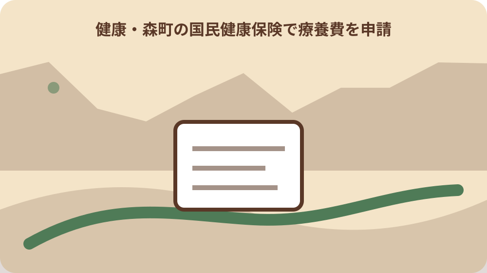
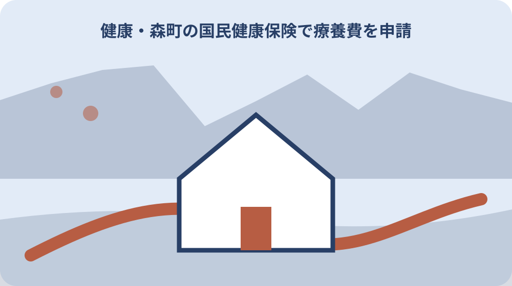

先に結論を確認する
この記事の答え：支払理由を一つ選び、その理由専用の領収書・明細・医師証明等、受診日の資格資料、振込先、受付、追加照会、決定、入金を別欄にします。全額を払ったという理由だけで異なる場面の資料を混ぜません。
森町で最初に照合する条件：受診日または購入日に森町国保の資格があったかを確認し、現在の保険資格だけで申請先を決めない。
結論は支払理由・専用証明・共通資料・受付結果を一件表へ分ける
森町国保の療養費申請束は、最初に支払理由を一つ選び、その理由専用の証明書と領収書、受診日の資格資料、振込先、受付結果を別欄へ置いて作ります。全額を払ったという共通点だけで、異なる場面の書類を一袋へ混ぜません。
表の一行目には患者名、診療日または購入日、支払先、支払額、受診日の保険者を書きます。二行目で、資格を示せなかった受診、柔道整復、はり等、治療用装具、生血代のいずれかを選び、該当しない欄には斜線を引きます。
三行目には森町公式がその場面で挙げる専用資料を一件ずつ置きます。領収書だけでよいと推測せず、医師の同意書、医師の証明書、施術明細、輸血関係の証明など、支払理由と対になる資料名をそのまま記録します。
最後は提出日で終わらせず、窓口の受付結果、追加照会、決定通知、振込日まで状態を更新します。この台帳は支給可否や支給額を決める書類ではなく、森町国保へ事実を過不足なく渡すための家族用補助表です。
既存の療養費ガイドは制度の対象や医療上の注意を読む入口です。本稿は、実際に手元へ集まった書類を一件の申請束へ組み直す段階だけを扱い、診断や施術の適否、給付決定を代行しません。
表紙の資料数には、領収書一通、証明書一通のように実物単位で件数を書きます。窓口で追加資料が生じたら総数を直し、家族が封筒を引き継いだ時点の不足を見えるようにします。
受診日の保険者と全額支払の理由を最初に固定する
現在の加入先ではなく、費用が発生した日にどの保険へ加入していたかを確認します。転職、扶養変更、転入・転出の近くで支払った場合は、資格取得日と喪失日を並べ、森町国保の対象期間だったかを国保年金係へ伝えます。
領収書の余白へ推測で理由を書き足さず、医療機関や事業者から受けた説明を確認します。資格を示せなかったのか、装具を購入したのか、施術を受けたのかによって、森町公式が示す資料の組合せが変わります。
医療機関で後日精算を受けられる場合と、森町国保へ療養費を申請する場合を重ねません。精算の可否、返金額、返金日を医療機関へ確認し、返金済みなら同じ支出を未精算として申請束へ入れないようにします。
支払額は診療費、装具代、施術費などの名目と一緒に残します。交通費や市販品を同じ合計へ足さず、領収書の発行者、患者名、日付、金額が読めるかを確認して、不明な内訳は窓口質問欄へ移します。
森町公式は、全額支払後に申請すれば必ず全額が返るとは説明していません。審査で決定した場合に一部負担金を除く額が支給されるため、家計表では支払額と未確定の支給見込を別にし、決定前の額を収入にしません。
支払理由を医療費という一語で済ませず、領収書を発行した相手へ内容を確認します。診療と物品購入が同じ会計なら、明細を分けられるかを尋ね、対象外費用を申請額へ混ぜません。
資格を示せなかった受診は領収書と資格資料を対にする
急病などで保険資格を示せず全額を支払った行には、医療機関名、診療日、患者名、支払額が確認できる領収書を置きます。診療明細が手元にある場合も同じ日付へ結び、別の受診分と混ざらないよう一件番号を付けます。
資格資料は受診日の加入関係を説明できるものを森町へ確認します。現在のマイナ保険証だけを見て過去日も対象だったと決めず、資格確認書や資格情報のお知らせなど、受診日時点を説明する資料名を質問欄へ書きます。
マイナ保険証を持つ人について、森町は資格情報のお知らせを交付すると案内しています。一部の医療機関ではマイナンバーカードと一緒に提示する資料であり、単独利用の可否や申請時の写しの要否は窓口回答で確定します。
マイナ保険証を持たない人については、森町が資格確認書を申請不要で交付すると案内しています。紛失や有効期限切れの場合の扱いを自己判断せず、受診日、手元の資料、有効期限を国保年金係へ伝えます。
後日精算の回答者、回答日、精算できない理由も一行に残します。医療機関から返金を受けないことが分かった後に申請束を提出し、あとから返金が生じたときは森町へ連絡が必要か確認します。
受診日の資格が確認できても、それだけで療養費の対象と決定するわけではありません。資格の確認と支払理由の審査を別の欄に置き、資格資料があることを支給決定と読み替えません。
柔道整復は受領委任と全額立替を分けて明細を読む
柔道整復師の施術では、窓口で一部負担金だけを払う受領委任の扱いと、全額を支払って療養費申請を検討する場面を区別します。森町公式も、国保を扱う柔道整復師では一部負担金で受けられる場合があると説明しています。
全額立替の行には、施術内容と費用明細が分かる領収書等を置きます。施術日、負傷部位、回数、金額が実際の内容と一致するかを本人が読み、白紙の確認欄や事実と異なる負傷原因へ署名しません。
骨折や捻挫などという森町の例示は、個別の施術が自動的に対象になるという決定ではありません。仕事中や通勤中の負傷、交通事故、日常的な疲労など、別制度や対象外の可能性がある事情は隠さず窓口へ伝えます。
同じ負傷について医療機関でも治療を受けた場合は、日付と治療内容を別欄にします。どちらか一方の領収書を省略してよいと決めず、申請束に必要な範囲を森町へ確認してから原本を提出します。
受付後に内容照会が届いた場合は、実際の施術日と回答期限を照らします。記憶だけで回数を埋めず、領収書、予約記録、通院記録を確認し、分からない部分は分からないと回答できるよう家族用台帳へ残します。
施術所の名称、所在地、連絡先も領収書から転記します。同名の施術所や複数店舗を取り違えないよう、問い合わせ先と実際に施術を受けた場所が一致するかを確認します。
はり・きゅう・マッサージは医師の同意と施術明細を別欄にする
はり・きゅう・マッサージの行には、医師の同意書と施術内容・費用明細が分かる領収書等を別々に置きます。領収書に同意の事実まで書かれていると考えず、森町公式が列挙する資料を一件ずつ確認します。
同意書は発行医療機関、発行日、対象となる傷病、施術との対応を記録します。口頭で了承を得た記憶を正式な同意書へ置き換えず、どの様式が必要か、再同意が必要かを施術所と森町へ確認します。
施術明細には施術日、種類、回数、金額が読み取れるかを確認します。月単位の領収書だけで内訳が分からない場合は、どの資料を追加で発行できるかを施術所へ尋ね、取得予定日を不足欄に入れます。
医療機関の治療と同じ期間に施術を受けた場合も、対象可否を記事で決めません。受診先、施術所、期間を一枚に並べ、保険給付の取扱いを判断できる森町国保へ事実を伝えます。
家族が代理で資料を集めるときは、診療情報や同意書を誰へ渡せるかを医療機関へ確認します。家族関係だけで自由に取得できるとせず、本人同意、委任、本人確認の必要性を取得先ごとに記録します。
同意書と領収書の対象期間がずれている場合は、その理由を本人の推測で埋めません。発行元へ照会した日と回答を残し、森町へ提出する前に期間の対応を確認します。
治療用補装具は医師証明・領収書・品名を一本の案件へ結ぶ
コルセットなどの治療用補装具の行には、医師が治療上必要と認めたことを示す証明書と領収書を置きます。一般の健康用品や本人希望の追加仕様を同じものとみなさず、正式な品名を証明書と領収書から転記します。
医師証明は患者名、証明日、装具名、治療目的との対応を確認します。購入後に証明を頼めば必ず整うとは限らないため、作製前後のどの時点で何を受け取るかを医療機関と装具事業者へ尋ねます。
領収書は支払日、購入者、装具名、金額、事業者名を読みます。部品、修理、送料、追加仕様が別明細なら、それぞれを分けて、療養費申請の対象範囲を国保年金係へ確認します。
装具の写真、型番、納品書などが手元にあっても、森町公式が公開する共通一覧だけから追加提出の要否は断定しません。品目を伝えて窓口回答を受け、その回答日と必要資料名を申請束の表紙へ書きます。
障害福祉の補装具、介護保険の福祉用具、がん患者の補整具助成は、名称が似ても別制度です。どの制度で購入したか、すでに別給付を受けたかを明示し、同じ領収書を重ねて申請しません。
装具を受け取った日と代金を支払った日が異なるときは両方を記録します。どの日付を申請上使うかは記事で決めず、証明書と領収書を示して国保年金係へ確認します。

生血代は三つの証明と提供者領収書を取り違えない
輸血などのために生血代を負担した行では、医師の輸血証明書、輸血用生血液受領証明書、血液提供者の領収書を三つの別資料として扱います。名称が似ていても一枚で代用できると決めません。
医療機関へは患者名、輸血日、証明書の発行部署、受取方法を確認します。家族が血液提供者へ直接支払った場合は、誰が誰へ何の費用を支払ったかが領収書で読めるかを確かめます。
通常の入院領収書に生血代が含まれているか、別払いかも記録します。合計額だけを転記すると提供者領収書との二重計上が見えなくなるため、医療機関支払と提供者支払を別欄にします。
証明書の再発行に日数や費用がかかる場合は、提出期限を推測して急がず、森町へ先に不足状況を伝えます。受け付けられる資料、原本の要否、後日補完の可否は窓口の回答として保存します。
医療上の輸血の必要性や血液の安全性は本稿で評価しません。療養費の申請束では、すでに発生した支払と公的に案内された証明の対応だけを整理し、医療判断は担当医へ確認します。
提供者の個人情報は申請に必要な範囲だけを保管します。家族用の進行表には証明書の有無と保管場所を記し、氏名や口座などを多数の人へ共有しません。
共通資料は資格・口座・申請者・原本状態をまとめる
五つの支払理由に共通する欄には、受診日の国保資格を説明する資料名を置きます。マイナ保険証、資格情報のお知らせ、資格確認書のどれをどの形で示すかは、現在の制度と個別事情を森町へ伝えて確定します。
振込先は金融機関名、支店名、口座番号、口座名義を正式表示で転記します。森町は口座番号等が分かる物を求め、ゆうちょ銀行では通帳の見開きページの写しが必要と明記しているため、銀行種別を先に分けます。
患者、世帯主、申請する人、費用を払った人、口座名義人が異なる場合は、五者を別欄にします。家族なら同じ口座を使えると推測せず、委任や同意が必要かを国保年金係へ確認します。
領収書や証明書の原本を提出する場合は、返却の有無を確認し、提出前に読める写しを保管します。個人番号、病名、口座が見える資料は共有範囲を限定し、一般の家族写真フォルダへ入れません。
申請書様式、本人確認、提出方法、申請期限は、森町公式の療養費一覧から推測で補いません。一件の支払理由、診療日、手元資料を伝え、窓口が回答した現行条件を確認日付きで申請束へ追加します。
共通資料を一式用意しても、支払理由ごとの専用証明が欠ければ申請束は完成していません。共通欄のチェック数で準備完了と判断せず、専用欄を先に読み返します。
提出前は五つの照合で不足と二重精算を止める
第一の照合は、支払理由と専用証明が対応しているかです。装具の案件へ施術同意書を入れるような取り違えを避け、森町公式の同じ行に並ぶ資料だけを案件表で結びます。
第二の照合は、患者名、日付、支払先、金額です。領収書と証明書で表記が違う場合は勝手に修正せず、旧姓、通称、作製日と支払日の違いなど、理由を発行元へ確認します。
第三の照合は、医療機関や事業者からすでに返金を受けていないかです。返金予定、返金済み、返金なしを分け、同一支出について二つの窓口から補てんを受けないようにします。
第四の照合は、受診日の保険者と現在の保険者です。森町国保の加入期間外なら申請先が異なる可能性があるため、資格日を示して正しい保険者へつなぎます。
第五の照合は、原本と控えの状態です。提出する資料、見せるだけの資料、返却を求める資料を分け、封筒の表紙へ件数を書きます。家族が提出する場合も、同じ件数を引継ぎます。
照合で矛盾を見つけたら、事実に合わせて発行元へ訂正方法を確認します。自分で領収書や証明書へ追記・修正せず、再発行された場合は旧資料と新資料を区別します。
受付・追加照会・決定・振込を四段階で追う
窓口へ渡した日は提出日として記録し、受付されたことと支給が決定したことを同じ状態にしません。受付番号、担当係、受け取られた原本、返却物を控えに書きます。
追加照会が来た場合は、求められた資料名、対象日、回答期限、取得先を一件表へ足します。電話の要点だけを家族へ転送せず、どの支払案件についての照会かを一件番号で示します。
決定通知では、申請時の支払額、審査の対象額、支給決定額を三列で残します。差額があっても即座に誤りと決めず、一部負担金や支給基準など計算の説明を森町へ確認します。
振込日は通帳で確認し、通知書の額と一致するかを見ます。振込名義、入金日、金額を記録し、同じ時期の高額療養費や医療機関返金と取り違えません。
不支給または一部支給のときも通知書を捨てず、理由と問い合わせ日を保存します。別自治体の例や購入先の説明だけで再請求せず、森町の決定内容を基に次の確認先を決めます。
窓口へ電話しただけの段階は相談済みとして記録し、申請済みにしません。相談、資料取得、提出、受付、決定という動詞を揃えると、家族間の完了認識のずれを防げます。

大石の視点：公的な必要書類と家族用進行表を明確に分ける
森町公式で確認できる公的事実は、五つの支払場面ごとの必要資料、資格確認資料、口座振込、ゆうちょ銀行の通帳写し、国保年金係という窓口です。ここまでを公的事実欄に置き、私、大石浩之の実務提案とは分けます。
私の提案は、支払理由、専用証明、共通資料、受付、決定、振込を六つの状態で追う家族用進行表です。これは森町や厚生労働省が指定する申請様式ではなく、資料の混同と提出後の放置を防ぐ補助表です。
療養中は本人が電話や書類取得を続けられないことがあります。家族用進行表には次に動く人と期限を置きますが、診療情報を共有する範囲は本人の意向と医療機関の手続に従います。
実家や空き家の管理資料と医療費の申請束は分けます。口座、病名、装具情報を不動産資料へ混ぜず、郵便物を受け取る担当と保管場所だけを必要最小限で共有します。
支給見込を理由に大きな支出や資産処分を急ぎません。決定額と入金日が確定してから家計へ反映し、医療費控除など別制度へ引き継ぐ場合も補てん額を正確に示します。
公的事実欄は森町公式の更新を確認するたびに見直します。私案の六状態は変えなくても、必要資料や資格確認の方法が変われば、事実欄だけを新しい確認日で更新します。
最終確認は一件番号と確認日を付けて申請束を閉じる
表紙には一件番号、患者、支払理由、診療日または購入日、支払額、受診日の保険者を書きます。複数月や複数の装具を一つにまとめず、窓口が同一申請として扱う範囲を確認して番号を分けます。
資料一覧には、森町公式で確認した物、発行元から取得した物、窓口が追加で求めた物を区別します。ウェブページの確認日も残し、古い案内の必要書類を現在の申請へそのまま使いません。
未確認欄には、申請期限、申請書様式、代理提出、口座名義、原本返却など、公開情報だけでは確定できない条件を書きます。空欄のまま提出せず、国保年金係へ一度で伝えられる質問文にします。
提出後は受付日、追加照会、決定通知、振込の四つを追い、完了した段階へ日付を入れます。決定通知と申請控えを同じ一件番号で保管し、次年度の別案件へ混ぜません。
結論は、療養費を一つの一般的な払い戻しと考えず、支払理由ごとに専用証明を選ぶことです。今日できる一歩は、領収書の発行者と日付を確認し、森町国保年金係へ支払理由を一文で伝えることです。
完了後も原本の返却状況を確認します。返却された証明書と決定通知を一緒に保管し、次の申請で再利用できると決めつけず、新しい支払ごとに必要資料を確認します。